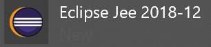
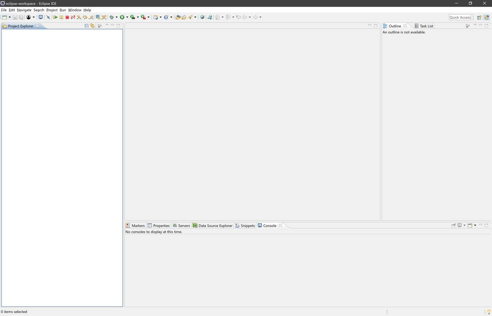
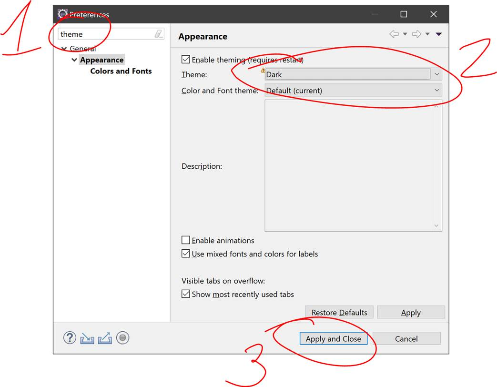
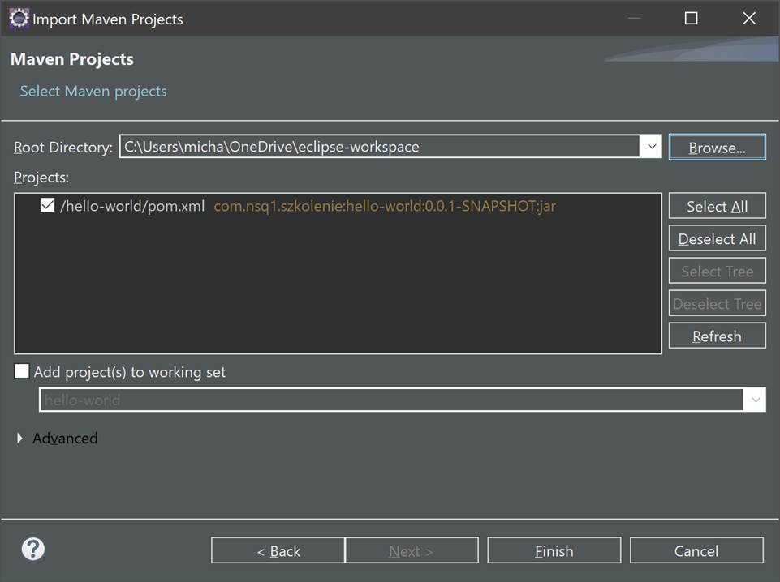

Pierwsze kroki
Proszę o zapoznanie się/realizację ćwiczenia:
Uruchamiamy Eclipse
Odszukujemy i uruchamiamy 
 Eclipse poprosi nas o wyznaczenie przestrzeni roboczej na rozwijane projekty.
Eclipse poprosi nas o wyznaczenie przestrzeni roboczej na rozwijane projekty.
Mogą być to nawet "moje dokumeny", ale radzę stworzyć podkatalog związanych tylko i wyłącznie z naszym szkoleniem. U mnie wygląda to następująco:
Eclipse przywita nas powitalną zakładką "Welcome", którą możemy od razu zamknąć. Eclipse powinien wyglądać w następujący sposób.
{kind=link}
Używam ciemnego motywu kolorów w Eclipse, z takiego będę również zamieszczał wycinki ekranu. Jeśli ktoś obawia się, że inna wersja 'kolorów' może mu utrudnić przyswojenie szkolenia, proponuję zmianę na identyczny z moim.
W tym celu wchodzimy w opcje: Window>Preferences, w nowo otwartym oknie filtrujemy opcje słowem "theme" a następny w sekcji General/Appearance wybieramy Theme: Dark i akceptujemy zmiany
{kind=link}
{kind=link}
Uruchamiamy Git Bash
Odszukujemy i uruchamiamy
Następnie przy pomocy komendy ‘cd’ przechodzimy do katalogu, który wybraliśmy jako workspace dla Eclipse. U mnie jest to:
$ cd /c/Users/micha/OneDrive/eclipse-workspace/
Ściągamy projekt Hello World
Wchodzimy na eb-java/hello-world a następnie w prawym górnym rogu wybieramy opcję  .
.
Wybieramy stworzenie projektu w przestrzeni naszego użytkownika.

Po chwili powinniśmy zobaczyć stronę podobną do tej:

Klikamy na  i kopiujemy ten link do konsoli git bash poprzedzając go tekstem "git clone ".
i kopiujemy ten link do konsoli git bash poprzedzając go tekstem "git clone ".
Komenda git i jej efekt powinien wyglądać podobnie do:
{kind=link}
Importujemy i uruchamiamy projekt
Wracamy do Eclipse, wybieramy opcję File>Import.
Wybieramy Maven>Existing Maven Project.
Odszukujemy projekt na dysku, ja robię to przez wybranie w Root Directory mojego workspace. A potem zaznaczenie wybranych projektów do zaimportowania checkboxem.
{kind=link}
Następnie klikamy Finish. Po zaimportowaniu projekt "hello-world" powinien pojawić się w sekcji "Project Explorer".
{kind=link}
Otwieramy klasę HelloWorld a następnie uruchamiamy przez kliknięcie na górnym pasku run  run
run
W sekcji sekcji "Console" powinniśmy zobaczyć napis "Hello World!" jak obok
{kind=link}